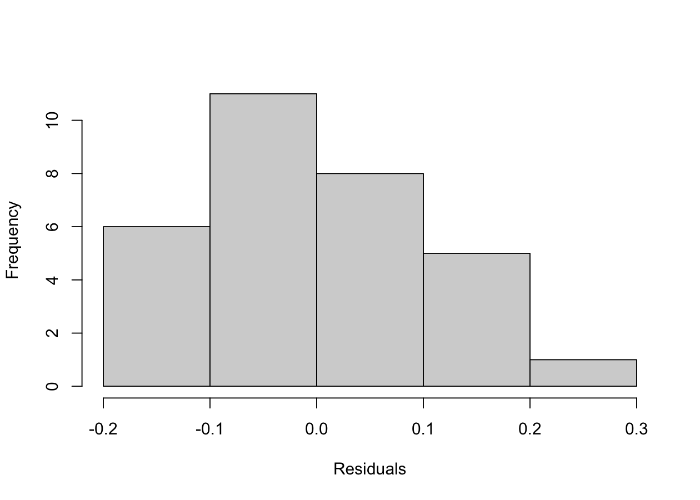

Interpreting the coefficients, at fixed values of the other variables
Tests, confidence intervals and predictions with several explanatory variables
A qualitative explanatory variable
NoteNote
The exercises associated with this unit are available at this link.
Back to the black cherry trees
In Unit K we predicted the volume of timber of n = 31 black cherry trees from the diameter of their trunk. The unit ended with an observation: the volume does not depend on the diameter only, since taller trees have, on average, more timber.
NoteResearch question
Does the height of a tree help to predict its volume, once the diameter is known?
diameter height volume
Min. :21.10 Min. :19.20 Min. :0.2890
1st Qu.:28.05 1st Qu.:21.90 1st Qu.:0.5495
Median :32.80 Median :23.20 Median :0.6850
Mean :33.65 Mean :23.17 Mean :0.8544
3rd Qu.:38.70 3rd Qu.:24.40 3rd Qu.:1.0565
Max. :52.30 Max. :26.50 Max. :2.1800
Scatterplot matrix
With three variables, the command pairs draws all the scatterplots at once, and cor applied to the data frame returns all the correlations:
The volume is strongly related to the diameter and, less strongly, to the height. Note also that the two explanatory variables are related to each other: taller trees tend to have a larger diameter.
The multiple linear regression model
The multiple linear regression model with two explanatory variables assumes that
Y_i = \alpha + \beta_1 x_{i1} + \beta_2 x_{i2} + \epsilon_i, \qquad i = 1,\dots,n,
where x_{i1} is the diameter and x_{i2} the height of the ith tree. As in Unit K, the values x_{i1} and x_{i2} are treated as fixed, and the errors \epsilon_1,\dots,\epsilon_n are independent, with distribution \text{N}(0, \sigma^2). Therefore:
\alpha + \beta_1 x_1 + \beta_2 x_2 is the mean volume of the trees with diameter x_1 and height x_2;
\beta_1 is the change in the mean volume when the diameter increases by 1 cm, at fixed height;
\beta_2 is the change in the mean volume when the height increases by 1 m, at fixed diameter.
The estimates \hat{\alpha}, \hat{\beta}_1 and \hat{\beta}_2 are again obtained by least squares, that is by minimising
\sum_{i=1}^n (y_i - \alpha - \beta_1 x_{i1} - \beta_2 x_{i2})^2.
There is no simple formula as in Unit F: we let R do the computations.
The command lm
The explanatory variables are listed in the formula, separated by +:
fit <-lm(volume ~ diameter + height, data = cherry)coef(fit)
For two trees with the same height, one additional centimetre of diameter corresponds, on average, to 0.053 m^3 of additional timber. For two trees with the same diameter, one additional metre of height corresponds, on average, to 0.031 m^3 of additional timber. In short, we say that these are the effects of the diameter and of the height, each adjusting for the other variable.
The command summary
summary(fit)
Call:
lm(formula = volume ~ diameter + height, data = cherry)
Residuals:
Min 1Q Median 3Q Max
-0.180164 -0.074464 -0.005866 0.062388 0.242487
Coefficients:
Estimate Std. Error t value Pr(>|t|)
(Intercept) -1.634110 0.244261 -6.690 2.92e-07 ***
diameter 0.052542 0.002953 17.790 < 2e-16 ***
height 0.031082 0.012071 2.575 0.0156 *
---
Signif. codes: 0 '***' 0.001 '**' 0.01 '*' 0.05 '.' 0.1 ' ' 1
Residual standard error: 0.1102 on 28 degrees of freedom
Multiple R-squared: 0.9477, Adjusted R-squared: 0.9439
F-statistic: 253.5 on 2 and 28 DF, p-value: < 2.2e-16
The output is read as in Unit K, with a few differences:
in the table Coefficients, the rows diameter and height test H_0: \beta_1 = 0 and H_0: \beta_2 = 0, that is, whether each variable is useful given the other one. The test statistics are computed as in Unit K, estimate divided by standard error, but now have a t distribution with n - 3 degrees of freedom. The height has a P-value of 0.016: it helps to predict the volume, even when the diameter is known;
the variance \sigma^2 is estimated by s^2 = \frac{1}{n - 3}\sum_{i=1}^n e_i^2, because three parameters have been estimated: Residual standard error is s, with n - 3 = 28 degrees of freedom;
the last line is the F test of H_0: \beta_1 = \beta_2 = 0, that is, whether at least one of the variables is useful. Here the P-value is practically zero.
The coefficient R^2 increases from 0.935 (diameter only, Unit K) to 0.948. It is still defined as R^2 = 1 - \text{var}(e)/\text{var}(y), but it is no longer the square of the correlation between y and a single explanatory variable.
Confidence intervals
As in Unit K, the 95\% confidence intervals are obtained with confint:
fit_height <-lm(volume ~ height, data = cherry)coef(fit_height)
(Intercept) height
-2.4469264 0.1424763
Alone, one additional metre of height corresponds to 0.142 m^3 of additional timber: almost five times the value 0.031 obtained at fixed diameter. Why?
Taller trees also tend to have a larger diameter. The simple regression attributes to the height also the effect of the diameter, which is not in the model. The multiple regression, instead, compares trees with the same diameter.
The coefficient of a variable depends on which other variables are in the model. Always interpret it together with the list of the other variables: “at fixed …”.
Prediction
Two standing trees have the same diameter, 40 cm, but different heights, 20 m and 25 m. The data frame given to predict must now contain both variables:
The taller tree is expected to have about 0.16 m^3 of additional timber. As in Unit K, interval = "confidence" would instead give the intervals for the mean volume.
The residuals show the same curvature seen in Unit K: adding the height improves the predictions, but it does not fix this problem. The model is useful, but it is only an approximation.
As in Unit K, we also check that the residuals are roughly bell-shaped:
hist(residuals(fit), main ="", xlab ="Residuals")

A qualitative explanatory variable
Let us go back to the Houses data of Exercises B: the selling price (price, thousands of dollars) and the size (size, square feet) of 100 houses, and whether the house is new (new, 1 = yes, 0 = no).
Are new houses more expensive than old ones? By how much?
A qualitative variable can be included in lm as any other variable:
fit_new <-lm(price ~ new, data = Houses)coef(fit_new)
(Intercept) newyes
207.8511 228.5943
R creates the indicator variable newyes, equal to 1 for new houses and 0 for old ones. Denoting it by x_i, the model is the simple linear regression model of Unit K,
Y_i = \alpha + \beta x_i + \epsilon_i,
so that \alpha is the mean price of old houses (x_i = 0) and \alpha + \beta is the mean price of new houses (x_i = 1). Therefore, \beta is the difference between the mean prices of new and old houses. The first category, no, is the reference category: it has no indicator. With c categories, R creates c - 1 indicators, one for each category except the first.
Let us compare new and old houses of the same size, with the model Y_i = \alpha + \beta_1 x_{i1} + \beta_2 x_{i2} + \epsilon_i, where x_{i1} is the size and x_{i2} is the indicator of new houses. Now \beta_2 is the difference between the mean prices of new and old houses, at fixed size:
fit_size_new <-lm(price ~ size + new, data = Houses)summary(fit_size_new)
Call:
lm(formula = price ~ size + new, data = Houses)
Residuals:
Min 1Q Median 3Q Max
-307.653 -51.562 -8.667 28.394 245.799
Coefficients:
Estimate Std. Error t value Pr(>|t|)
(Intercept) -60.34630 22.04421 -2.738 0.00737 **
size 0.17420 0.01319 13.204 < 2e-16 ***
newyes 86.60442 27.97956 3.095 0.00257 **
---
Signif. codes: 0 '***' 0.001 '**' 0.01 '*' 0.05 '.' 0.1 ' ' 1
Residual standard error: 80.82 on 97 degrees of freedom
Multiple R-squared: 0.7226, Adjusted R-squared: 0.7169
F-statistic: 126.3 on 2 and 97 DF, p-value: < 2.2e-16
At fixed size, a new house costs on average 87 thousand dollars more than an old one, and not 229: a large part of the difference between the two groups is due to the size. The difference remains statistically significant (P-value 0.003).
This is the same phenomenon seen with the trees: the effect of a variable changes when another variable, related to both, enters the model. The size is a confounding variable for the comparison between new and old houses.
These are observational data: association does not imply causation. Adjusting for the size removes its effect, but other variables that are not in the data (the neighbourhood, the quality of the materials, …) could still explain part of the difference.